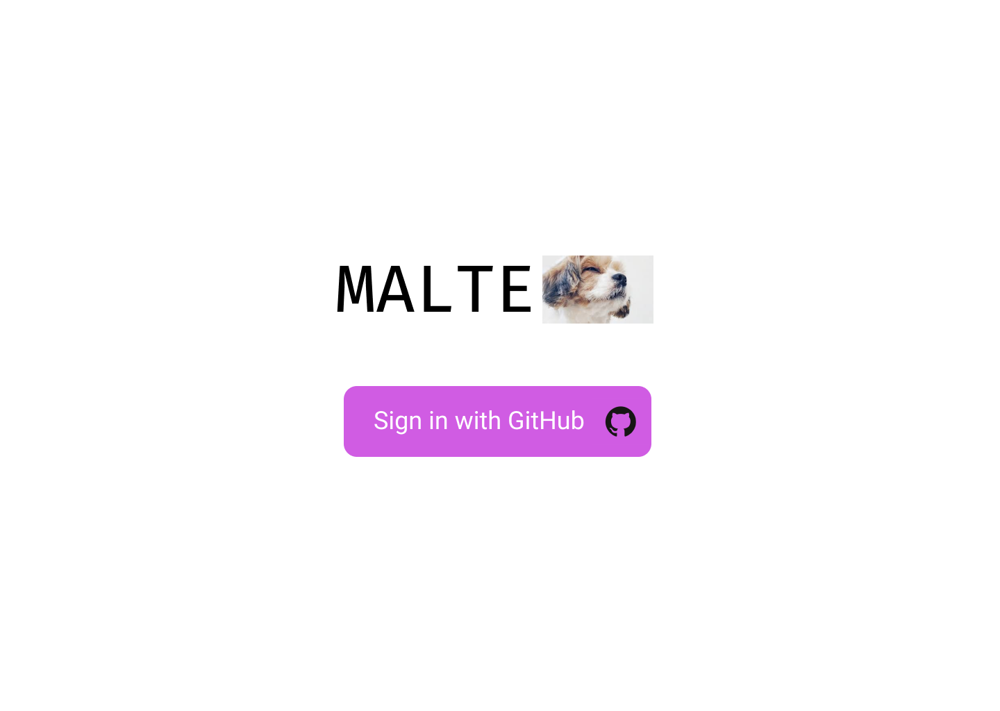
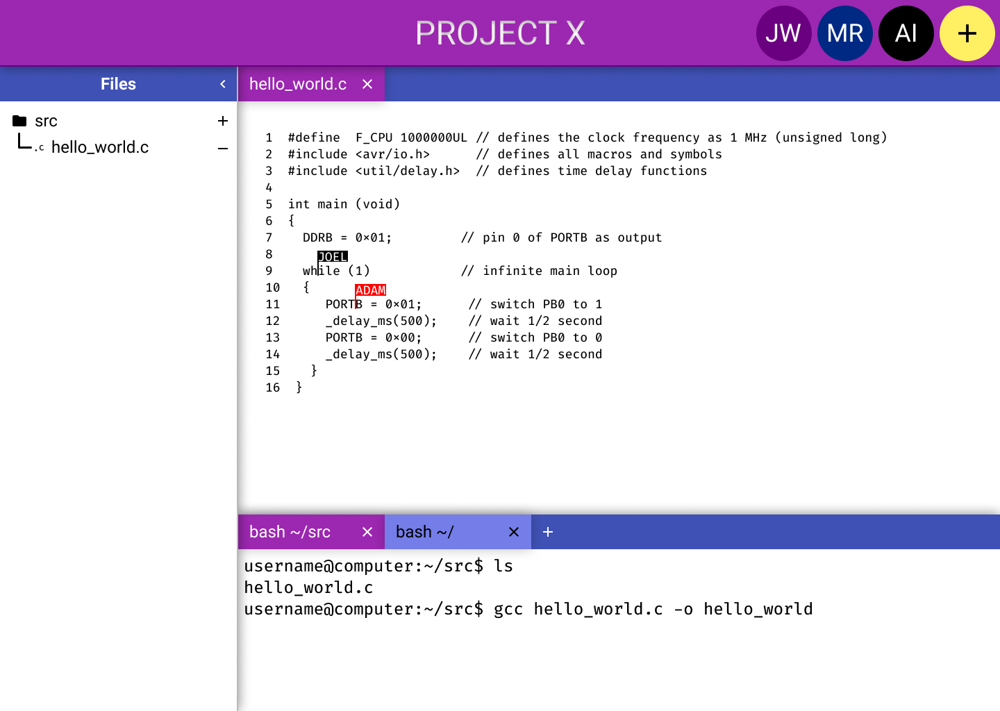
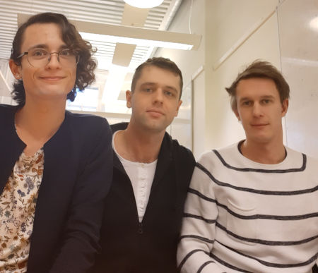
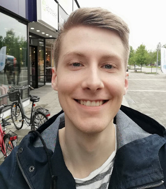

MALTE - Multiple Access Live Text Editor
An in-browser collaborative coding environment, in which one can edit and compile code a server using an built-in shell.
 Try it out
Current version reflecting our GitHub master-branch can be found here.
Progress Report
Progress Report 1 (See Project Specification)
Progress Report 2 (Updated 2019-11-26)
Releases
All releases can be found here. All releases gets automatically published on Docker Hub, which allows the end-user to easily start a new docker image by executing `docker run -p 4000:4000 rehnarama/malte-uu:latest`.
Project Specification
Updated 2019-11-14
An up-to-date specification can be found here.
Project Report
Updated 2019-11-26
An up-to-date report can be found here.
Software Repository
A Github repository can be found here.
Agile Project Board
We use a SCRUM-esque process. You can thus follow our progress at our board.
Project Members
| Name | This Sprint's Project Leader | |
|---|---|---|
| Jonas Norlinder | jonas.norlinder.4597@student.uu.se | |
| Joel Westerlund | jowe3751@student.uu.se | ← |
| Adam Inersjö | adam.inersjo.2778@student.uu.se | |
| Michael Rehn | michael.rehn.2439@student.uu.se |
We have decided to use a rotating scheme, where we change the project leader each sprint.
|  |  |
| Michael, Jonas, Joel | Adam |